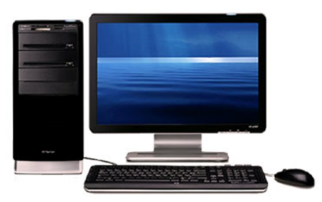

About Computer
The word "computer" is used to refer to absolutely any technique that is able to perform at least some kind of software operation from the calculator to the workstation. We will not consider them all, but we will only talk about the most popular types of computers. What they are, what are the differences and for whom this or that species is suitable.
Desktop computer. This is a stationary technique designed to work at home or in the office. That is, it is not designed to move from one place to another - where they put it, it's there.
A laptop. A portable computer is relatively small. One-piece unit, which includes a screen, and "brains", and a keyboard with a mouse replacer (touchpad), and even built- in speakers. And most of the models at the top of the screen have a webcam.
Recover Deleted Files
All of us from time to time we clean the computer of unnecessary files. And sometimes, it turns out that the necessary files, such as documents or photos, are deleted. The easiest way to recover them is to open the Recycle Bin, find the deleted files and restore them. But what if the basket is cleaned? Here, the R-Studio program will help us. It will help us to find a way out of the problem.
How to know the temperature of the processor, video card and other computer components

There is no need to monitor the temperature of the video card or processor, since modern computers are protected against overheating. But if all the same, your computer starts to turn off with no result (especially when some powerful game is started), or the computer started to make a lot of noise (meaning the work of the cooler, especially it is noticeable on laptops) then it is worth to look at the temperature of the devices. Perhaps this is all due to overheating of the cores (processors) or video card. If the diagnosis is still confirm the overheating, then most likely the computer is clogged with dust. Based on my experience, I can say that this is the main reason for overheating.
So, to find out what kind of temperature devices usually use special programs such as AIDA, CoreTemp, HWMonitor and others.
Proper use of solid state drives. Moving from HDD to SSD
Now SSD is actively becoming cheaper, and this trend will continue in the future. And many users decide on the purchase and installation of SSD in your computer or laptop. The main motive for why it is worth doing is to increase the speed of the operating system load several times, as well as the overall increase in PC performance.
As for the reliability of SSD compared to old good hard disks, it is difficult to judge, because it depends on many factors and often depends no longer on the absence of moving parts in solid state drives, as the producers are shouting, but on the banal reliability of the electronic part itself, the stability of the firmware, built-in controller.
According to the statistics of the leading data centers available today, the probability of SSD and HDD failures is comparable, so the factor of increased reliability as a reason for switching to SSD will not be taken into account for the time being.
When installing an SSD on a desktop computer, you should be aware that all manufactured solid-state drives have a 2.5-inch form factor, so you'll need to use an adapter to install it instead of 3.5-inch HDDs. However, it is usually available in a set of drives of famous brands.
The lifetime of your hard drive
If there is something to break, then it will necessarily break. A rhetorical question - when? Everything is very simple.
It will happen as always at the most unsuitable moment.
A special case is the failure of a hard drive, on which we store gigabytes of personal information, working materials, etc.
According to data from the company BackBlaze, which was one of the first to develop a cloud-based backup service without volume limitation.
They organized their data storage center on the basis of ordinary consumer hard drives, because it turned out to be the cheapest way.
As a result, they took more than 27,000 hard drives, which were represented mainly by three manufacturers: Seagate, Westem Digital, Hitachi. They are also world leaders in the production and sale of hard drives.
After four years of BackBlaze service on their blog, an article appeared in which they shared some curious facts regarding the survivability of hard disks and their reliability in conditions of active exploitation.

Curious facts
It turned out that in the first year of operation 5.1% of hard disks fail, then this figure is gradually increasing, and by the age of four every fifth hard disk is dead.
If we try to extrapolate this schedule for the fifth and sixth year, it tums out that only half of the hard disks will survive until their sixth birthday. Apparently, it's not for nothing that the longest warranty that can be found on hard disks is 5 years, and most manufacturers even now give a guarantee only for 1-2 years.